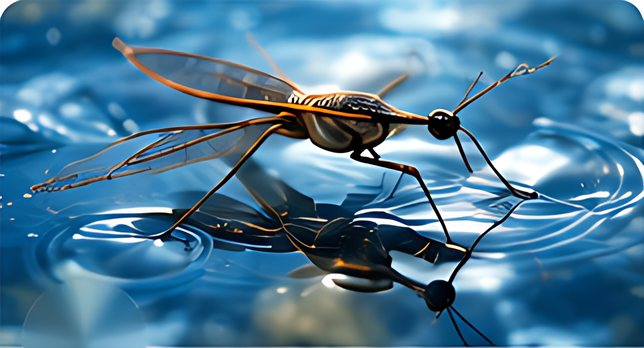
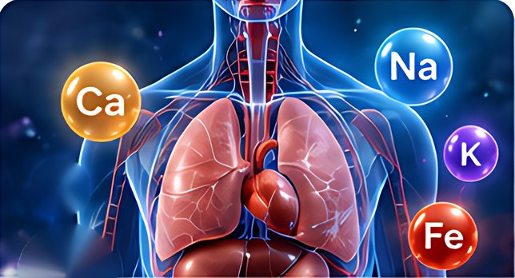
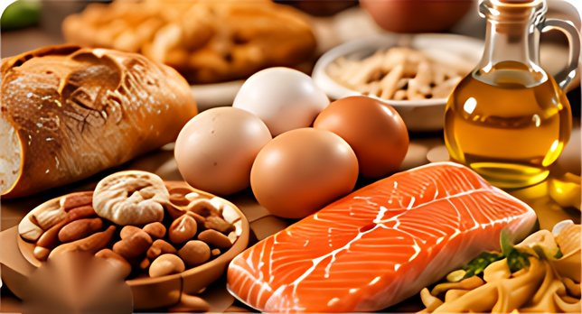

Home › Teacher Zone
Teacher Zone
Teacher guides, answer keys, the unit planner and assessment notes for Chapter 4 — and how to use the four presentations in class.
Teacher Pack (PDF)
A combined Teacher Pack is not published here, because it would contain the answer keys. The teacher guides and answer keys (PDF and DOCX) are in the teacher’s private Chapter 4 project folder, Chapter_4_Prezi_3D_Final/Teacher_Resources/. To share them with colleagues, upload that folder to school-controlled storage (for example the school Google Drive or Microsoft 365 with staff-only sharing) and add the link in site/js/config.js — a button to it will then appear on this page.
Teacher Guides
| File | Lesson | Formats | Status |
|---|---|---|---|
| Teacher Guide | Lesson 4.1 · Water | PDF + DOCX | Secure hosting required |
| Teacher Guide | Lesson 4.2 · Chemical Elements in Human Body | PDF + DOCX | Secure hosting required |
| Teacher Guide | Lesson 4.3 · Organic Compounds | PDF + DOCX | Secure hosting required |
| Teacher Guide | Lesson 4.4 · Deficiency of Macroelements in Plants | PDF + DOCX | Secure hosting required |
| Chapter 4 Teacher Preparation Checklist | Whole chapter | PDF + DOCX | Secure hosting required |
Answer Keys
| File | Lesson | Formats | Status |
|---|---|---|---|
| Answer Key | Lesson 4.1 · Water | PDF + DOCX | Secure hosting required |
| Answer Key | Lesson 4.2 · Chemical Elements in Human Body | PDF + DOCX | Secure hosting required |
| Answer Key | Lesson 4.3 · Organic Compounds | PDF + DOCX | Secure hosting required |
| Answer Key | Lesson 4.4 · Deficiency of Macroelements in Plants | PDF + DOCX | Secure hosting required |
Lesson Plans
| File | Lesson | Formats | Status |
|---|---|---|---|
| MYP Year 3 Unit Planner — Water and Organic Compounds | Whole chapter | DOCX | Secure hosting required |
Assessment
Exit tickets are formative and student-facing, so they are public. Their answers are in the answer keys.
| File | Lesson | Formats | Status |
|---|---|---|---|
| Proposed summative tasks (Criteria A and C) — draft, in the Unit Planner | Whole chapter | DOCX | Secure hosting required |
| Exit Ticket (student copy) | Lesson 4.1 · Water | PDF + DOCX | Public — open PDF |
| Exit Ticket (student copy) | Lesson 4.2 · Chemical Elements in Human Body | PDF + DOCX | Public — open PDF |
| Exit Ticket (student copy) | Lesson 4.3 · Organic Compounds | PDF + DOCX | Public — open PDF |
| Exit Ticket (student copy) | Lesson 4.4 · Deficiency of Macroelements in Plants | PDF + DOCX | Public — open PDF |
Presenting the lessons
Keyboard
- → / Space next reveal or scene · ← back
- O or Home overview map · End exit ticket
- A reveal / hide answers · R reset the scene
- T teacher notes (hidden by default) · M reduced motion
- F full screen · H help
Good to know
- Answers stay hidden until you press A or a Reveal button.
- The teacher-notes drawer is part of each presentation. Students who open a lesson on their own device can open it too, so do not put assessment answers in it.
- A lesson reopens on the same scene after a refresh. The 4.1 class results table is saved in the browser of that device.
- The Chapter 4 button in the top-left corner of every presentation returns to this website.

4.1 Water
Explain the properties of water and its importance for living organisms. · Textbook pp. 56–57

4.2 Chemical Elements in Human Body
Describe the role of micro- and macroelements in the life of organisms. · Textbook pp. 58–59

4.3 Organic Compounds
Determine the presence of carbohydrates, proteins, and lipids in foodstuffs. · Textbook pp. 60–61
4.4 Deficiency of Macroelements in Plants
Learn the importance of macroelements and fertilizers for plants. · Textbook pp. 62–63